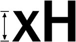
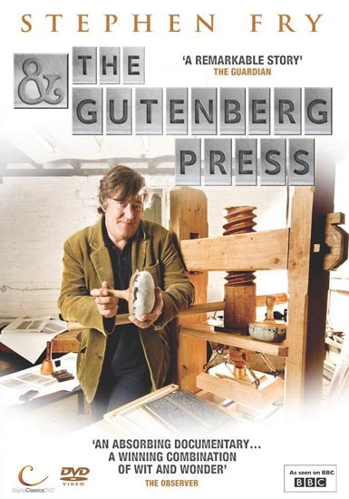
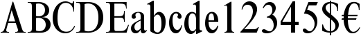
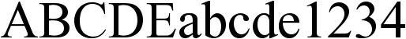

300 dpi scan (enlarged)
We just explained the concept of image resolution. Let’s give you an idea of the number of pixels on a single page. We’ll use a simple situation: we scan a US Letter or A4 page at 300 dpi in black-and-white. It takes only a single bit to store a pixel which is either black or white (in the computer’s language: 1 or 0). Still, given the image resolution of 300 dpi, a square inch has 300 x 300 pixels. That’s 90,000 pixels for a surface that small!
At 300 dpi, the dots are that small that we have to zoom in by more than 300% before we start to see the individual pixels! Still, it does take that many pixels to print — and recognize — text: had we used, say, only half that many pixels (150 dpi) to draw the characters, would we still have been able to read the lowercase letters “abc” printed in 11 point Calibri — a crystal-clear font by the way? And how about the green text (“surface: 1 square inch”) printed in 6 point Calibri — that bit is barely legible as it is! And if we humans can no longer read the text, how can we expect the OCR software to do it?
In other words, as small as the pixels may seem, it really does take an image resolution of 300 dpi for OCR applications! (For text smaller than 10 point, a 400 dpi resolution is recommended.)
To show you how fast the image quality degrades when the scanning resolution drops, we’ve printed a crisp, clear text on a 600 dpi laser printer and scanned it at various resolutions. Yes, I enlarged the images to push the individual pixels in your face — after all, those dots encoded in the image file are are what the OCR software has to process! My objective here is to show you up close the kind of detail you get at the various resolutions…
300 dpi scan (enlarged)
200 dpi scan (enlarged)
150 dpi scan (enlarged)
100 dpi scan (enlarged)
75 dpi scan (enlarged)
State-of-the-art OCR software recognizes point sizes from 6 point (0.08” or 2 mm. high) to 72 point (1” or 2.54 cm. high).
Point is a typographical unit of measure that describes the font size. A point equals 1/72”. Putting things the other way around: a point corresponds to 0.014” (0.35 mm.). The height of the lowercase “x”, also called the “x-height” or “body” of a typeface, serves as base for the measurement. (An alternative unit of measure is “pica”, but we won’t discuss it here.)

In other words, the upper bit above the x-height (“ascender”) and the lower bit below the x-height (“descender”) are ignored when we determine a font’s point size.
The imaginary bottom point of the lowercase characters (without the descenders) is called the base line, the less important imaginary highest point of all lowercase characters (without the ascenders) is the “mean line” or “median”.
Actually, some characters are slightly bigger than the x-height: the “overhang” or “overshoot” comprises the parts of a letter shape that descend below the base line and above the mean line. Overhang is used in round forms (for instance “C”, “G”, “O” and “Q”) and angular shapes (for instance “J”, “S” and “U”) to optically adjust the letter height. Similarly, a very pointed “v” letter can descend somewhat below the base line so as not to appear short. Thanks to the overhang, these characters look the same height as the other characters; without overhang, they would seem smaller than the other characters… Nice fonts are visually if not mathematically equal!
(And then you have the “double-storey” letters — for instance the lowercase “g” and a lowercase upright “a”. Don’t confuse the two storeys of these letters with the x-height: the two storeys of the “a” fall inside the x-height, the lower storey of the “g” letter implies the use of a descender!)
“Body” is the imaginary rectangle that surrounds a letter form, it includes the ascenders and descenders and defines the overall size of a character. (The “body size” or “line space” indicates the height of a font.)
At first, the “body” was the metal rectangle on which each individual letter was cast by the punchcutter. With photographic or digital typefaces, the body indicates its imaginary equivalent, the rectangular space“owned” by a given letter. In modern literature, the term “cell” is often used to describe the space occupied by a single character.
Metal type was an invention of the goldsmith Johannes Gutenberg from the German city of Mainz. Actually, metal type had already been invented in Korea around 1040, but Johannes Gutenberg really did reinvent the printing press: no knowledge of the printing press from the East ever reached Europe!

Compared to woodblock printing, movable metal type was more efficient — both quicker and cheaper — and more durable. The use of small metal units led to uniform lettering, and typography and fonts were born. The high quality and low price of the famous 42-line Gutenberg Bible (1455) established the superiority of movable type. His printing press spread across Europe very quickly, from a single press in Mainz in 1457 to 110 presses by 1480. Fifty of those presses were in Italy; Venice became the center of printing activity and typography (with Aldus Manutius, Francesco Griffo and others).
Most people don’t realize is how long this metal
technology endured — into the
80s! For instance,
Steven Spielberg showed off
the
linotype machine,
unmissable to print newspapers and magazines, in his movie
“The Post” (2017)!
IMDB page on The Post
—
Wikipedia page on The Post
The “body” is not equal to the dimensions of the letter itself: add the space around the actual letters to calculate the body! Nor is the “body size” or “line space” equal to the height of a font: add the space above and under the letter to calculate the body size.
A letter’s body includes “sidebearings”: that’s the distance between the origin and the left edge of a character (left sidebearing) and the distance between the width line and the right edge of a character (right sidebearing). The horizontal space occupied by the letter itself is called the “character width”.
In Hebrew, the logic of the Latin alphabet is inverted: here, the text is written on the (imaginary) “mean line”, not the “base line”. Or rather, the text hangs down from the “mean line”. (We should quickly add that Hebrew doesn’t use any lowercase characters, only uppercase symbols: some symbols from the Hebrew alphabet have an ascender or descender which uppercase symbols from the Latin alphabet never do. These ascenders and descenders certainly don’t play the role that they do in (lowercase) Latin-based fonts...)
And the Arabic script is different still: the text is written on lines, as is the Latin alphabet, but that doesn’t learn you much. Shallow letters rest on the line of writing. Tall letters do the exact same thing but are tall like a European “l”. Deep shapes start above the line of writing, swoop below it and then swoop up again.

Most people instinctively think that the “extenders” — the collective name of the “ascender” and “descender” — always have the same length. Not so, their length can vary quite a bit at times! Here’s the font Bernhard Modern for instance, known for its “normal” descenders and its extreme ascenders!
Furthermore, most people erroneously think that the x-height only applies to letters, not numerals. Wrong again: depending on the font, digits can be aligned with lowercase characters (“small caps numerals” or “old-style numerals”) — even if most typefaces align the numerals with the uppercase symbols…! (Never mind, more about small caps later.)

small caps or “old-style” numerals
“modern” numerals
As the extenders aren’t taken into account by the point size — only the x-height is —, this unit of measure says little about how big a typeface will actually look. (Typographists say that a font with a large x-height has a “large eye”.)
Stint Ultra Condensed size 6
Ubuntu Mono size 6
Marvel size 6
Anaheim size 6
Poiret One size 6
Oxygen size 6
Orbitron size 6
The weight is probably more crucial to the overall aspect of a typeface. A font’s weight expresses the density of the glyphs’ strokes, it indicates a letter’s relative amount of blackness. Given the thickness or lightness of the shapes, the “heaviness” of bold and expanded characters is obviously bigger than the weight of normal and condensed characters.
Despite what this illustration suggests, proper terminology for weight has never been precisely determined. In body text, two weights are generally used: the original design is called “regular” or “light”, the thicker version is the “boldface”. In more advanced usage, fonts may have as many as eight or nine different weights, differently described by each manufacturer. Weight is generally seen as a continuum, going from “light” (thinner than condensed) to “black” (thicker than expanded).

Times New Roman – condensed

Times New Roman – normal
Times New Roman – bold
Times New Roman – expanded
Here’s a nice tip: pangrams allow you to have an accurate idea of a font’s appearance. They’re sentences that contain every letter of the alphabet. “The quick brown fox jumps over the lazy dog” is well known to all PC users, but it’s certainly not the only example. Here are some alternatives: “How razorback-jumping frogs can level six piqued gymnasts”, “The risque gown makes a very brazen exposure of juicy flesh”, “Jaded zombies acted quaintly but kept driving their oxen forward”, “The sex life of the woodchuck is a provocative question for most vertebrate zoology majors” and finally “Jelly-like above the high wire, six quaking pachyderms kept the climax of the extravaganza in a dazzling state of flux”. (“Jackdaws love my big sphinx of quartz ” is also used, but the “f” is actually missing...)
Jackdaws love my big sphinx of quartz
The quick brown fox jumps over the lazy dog
How razorback-jumping frogs can level six piqued gymnasts
The risque gown makes a very brazen exposure of juicy flesh
The sex life of the woodchuck
is a provocative question
for most vertebrate zoology majors
Jaded zombies acted quaintly but kept driving their oxen forward
Grumpy wizard make toxic brew for the evil Queen and Jack
Jelly-like above the high wire, six quaking pachyderms kept
the climax of the extravaganza in a dazzling state of flux
Back to scanning resolutions and point sizes! For body text, the supported range of point sizes has no meaning, but when it comes to recognizing articles from newspapers and magazines, being able to read big titles is a real issue! If you are in the unlikely position where you have to read text bigger than 72 point, you could reduce the scanning resolution, but know that the recognition of the body text will quickly suffer, as we just showed.
(Pen scanners only scan strokes of about 0.4” (1 cm. high), and the highest point size they support is about 20 point: they scan body text but not big titles.)
The number of light-sensitive sensors on the CCD or CIS array determines the horizontal resolution.
The vertical resolution indicates the number of lines scanned by the CCD or CIS per linear inch: this value depends on the number of times the carriage motor stops when transporting the scanning head across the page. Stepper motors are very precise instruments: they don’t rotate continuously as “regular” motors do but use a belt to move one precise step. The scan head stays locked in position by a stabilizer bar until it’s moved one more step!
Limit yourself to optical resolutions, don’t use interpolated resolutions! Interpolated or “software-enhanced” resolutions are created by the software (or by the scanner’s firmware) by adding extra pixels in between that were never scanned. (You may have seen an ad for a flatbed scanner that claims to scan at 9,600 dpi, but know that it would take a CCD array of 81,600 sensors to scan at that resolution!)
With interpolation, the bitmap’s grid is inflated and every pixel on the grid gets recalculated! A software routine guesses on the basis of the surrounding pixels what color a pixel would have had, had it been scanned. The system estimates new intermediate values to be inserted between known, measured values.
You can perform the very same operation with Adobe Photoshop when you resize — resample actually — an image: you for instance change a 300 x 300 pixel image into a 600 x 600 image after the scan. When you scan at an interpolated resolution, the scanner handles the resampling for you, but the result is very much the same.
Interpolation increases the image size but not its resolution; it doesn’t add any detail to the image but rather repeats existing data by mixing real and fake pixels. Interpolated images have a vague, unsharp look to them. In other words: interpolation always decreases the image quality: the symbol shapes inevitably get more blurred. And you don’t want to recognize smudgy images!
The text is in the eye of the beholder — The intelligence of OCR — Bitmaps only take you so far — 90,000 kids on the block — OCR is the ultimate data cruncher! — OCR deserves recognition
Home page — Intro — Scanners — Images — History — OCR — Languages — Accuracy — Output — BCR — Pen scanners — Sitemap — Search — Contact – Feedback